Tema 1: Estructura atómica de la materia
1. Modelos anteriores a Bohr.
El primer científico que publicó, en 1808, una teoría sobre los átomos basada en hechos experimentales fue el inglés John Dalton.
Su modelo atómico afirmaba que la materia está formada por átomos, que son partículas indivisibles e indestructibles.
Eso significa que los átomos no podían estar compuestos de nada más: eran una especie de canicas de diferente tamaño y masa según fuera el elemento.
Pero si ellos mismos, los átomos, ya son una partícula no podían estar formados por otras partículas más pequeñas.
Sin embargo el descubrimiento de la electricidad y el estudio de los fenómenos eléctricos en los siglos XVIII y XIX hace sospechar a los científicos que dentro de los átomos debe haber “algo” con carga negativa y “algo” con carga positiva, con lo que los átomos deben tener “estructura interna”.
Las diferentes explicaciones de esa estructura son los modelos atómicos.
Modelo de THOMSON
En 1897 los experimentos realizados sobre la conducción de la electricidad por los gases dieron como resultado el descubrimiento de una nueva partícula con carga negativa: el electrón.
J.J. Thomson propone entonces el primer modelo de átomo:
Los electrones (pequeñas partículas con carga negativa) se encuentran incrustados en una nube de carga positiva.
La carga positiva de la nube compensa exactamente la negativa de los electrones siendo el átomo eléctricamente neutro. A este modelo se le suele llamar “el pastel de pasas”.
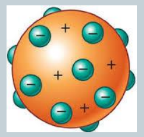
Modelo de RUTHERFORD
E. Rutherford realiza en 1911 un experimento crucial con el que trataba de comprobar la validez del modelo atómico de Thomson.
Partículas alfa (α), procedentes de un material radiactivo, se aceleran y se hacen incidir sobre una lámina de oro muy delgada, visualizándose la dirección en la que emergen tras atravesar los átomos de la lámina.
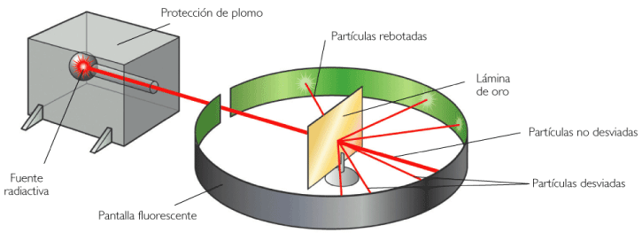
El análisis de los resultados obtenidos lleva a Rutherford a proponer la existencia de un núcleo (muy pequeño en relación con el volumen total del átomo).
En el núcleo se concentra la práctica totalidad de la masa del átomo.
La carga positiva compensará la negativa de los electrones corticales que giran alrededor del núcleo (a una distancia unas 10.000 veces mayor que el radio del propio núcleo) de forma análoga a como los planetas orbitan alrededor del Sol (modelo planetario).
En 1918 el propio Rutherford consideró que los núcleos de hidrógeno (que habían sido identificados en reacciones nucleares) deberían ser una partícula fundamental que se encontraría alojada en los núcleos de los átomos, proponiendo el nombre de protón para dicha partícula.
El neutrón fue propuesto también por Rutherford en 1920, siendo identificado por J. Chadwick en 1932 como producto de la reacción nuclear producida al bombardear núcleos de berilio con partículas alfa.
MODELO PLANETARIO
El diámetro de un átomo típico es del orden de \(10^{-10}\) m (0,1 nm), mientras que el núcleo atómico es 10.000 veces más pequeño (\(10^{-14}\) m).
Los protones y neutrones tienen un diámetro del orden de \(10^{-15}\) m, y el diámetro del electrón es del orden de \(10^{-18}\) m.
En los dibujos del átomo, sin embargo, el núcleo se dibuja exageradamente grande, para que se pueda ver.
Sin embargo este modelo contradecía la teoría electromagnética de Maxwell y no explicaba satisfactoriamente los espectros atómicos.
2. Cuestiones de física previas al átomo de Bohr: Radiacción electromagnética, espectros, Planck.
RADIACIÓN ELECTROMAGNÉTICA
El estudio de la estructura interna de los átomos se realiza mediante el empleo de experimentos en los que las ondas electromagnéticas interaccionan con ellos. De la “respuesta” a esa interacción se pueden sacar conclusiones sobre esa estructura. Es importante por lo tanto, conocer los parámetros básicos de las ondas electromagnéticas:
-
Velocidad de propagación: es la distancia que recorre un ciclo completo de la onda por unidad de tiempo: v = λ · f
-
Longitud de onda, λ, es la distancia existente entre dos máximos (la que recorre en un “período”).
-
Frecuencia, f, es el número de oscilaciones que hay en cada punto en un segundo. Se mide en \(s^{-1}\) o hertzios (Hz).
-
Periodo (T), es el tiempo en el que la onda recorre una longitud de onda. Es el inverso de la frecuencia: \(T = \frac {1}{f}\) .
En la segunda mitad del siglo XIX, James C. Maxwell propone teóricamente, y Heinrich Hertz confirma experimentalmente, que las ondas eletromagnéticas están compuestas por campos eléctricos y magnéticos variables, acoplados entre sí, y que su velocidad de propagación en el vacío es de 300.000 km/s, la misma que la de la luz.
Estas ondas transportan energía mediante un proceso diferente a la convección y la conducción, de tipo radiante. A diferencia de las ondas mecánicas (ondas en un lago, en una cuerda, el sonido...), no necesitan de un medio material para propagarse, pudiéndolo hacer en el vacío. Aunque también pueden propagarse a través de determinados medios, a velocidades algo menores.
El espectro electromagnético es un continuo formado por el conjunto de las radiaciones electromagnéticas. No está formado solo por las ondas que percibimos sensorialmente, como las de la luz visible, sino por muchas más.
Como enseguida veremos, a menor longitud de onda, mayor frecuencia y energía, y más peligrosas son las radiaciones. Así, la ultravioleta, \(R_X\), \(R_γ\), son radiaciones ionizantes.
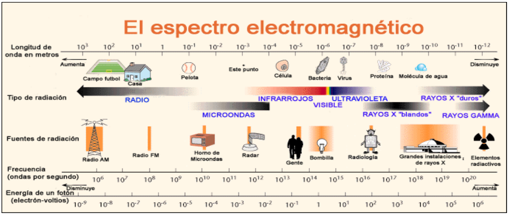
HIPÓTESIS DE PLANCK
Para explicar las emisiones de energía que ponen de manifiesto los espectros, Max Planck sugiere que los átomos se comportan como osciladores armónicos con una frecuencia de oscilación dada (f ). Se aparta de las leyes clásicas de la física al suponer que cada átomo no puede absorber o emitir energía radiante de forma arbitraria, sino solo en cantidades proporcionales a su frecuencia.
Supone que la energía que emite o absorbe un átomo está formada por pequeños “paquetes” de energía a los que llama cuantos o fotones.
La energía de cada uno de estos fotones viene dada por:
\(\text{E} = h \cdot f\)
donde \(f\) es la frecuencia con la que oscila el átomo y \(h\) una constante (constante de Planck) igual para todos los átomos de valor pequeñísimo: \(h = 6,626 \cdot 10^{-34}\) J · s
EL ESPECTRO DE LA LUZ VISIBLE
Es especialmente importante, por su relevancia en los espectros atómicos, y conviene que sepamos el “orden” de magnitud de sus longitudes de onda.
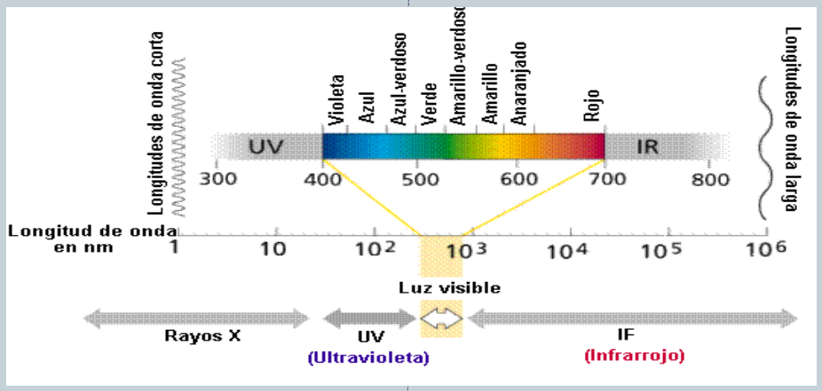
EL EFECTO FOTOELÉCTRICO
En 1887 E. Hertz había observado que se producían descargas eléctricas en metales cuando eran iluminados por luz UV.
Sin embargo este fenómeno se producía de forma diferente según fuese la luz que incidiera sobre el metal.
-
El número de electrones emitidos es proporcional a la intensidad de la luz.
-
La energía cinética de los electrones es proporcional a la frecuencia de la radiación incidente.
-
Sin embargo el fenómeno solamente se produce a partir de una cierta frecuencia de la radiación incidente que se llama frecuencia umbral.
Cuando se estudia el efecto fotoeléctrico se comprueba que no se produce con todas las radiaciones sino que solamente se produce cuando la radiación incidente tiene una frecuencia mínima (frecuencia umbral) a partir de la cual tiene la energía suficiente para arrancar electrones del metal (trabajo de extracción). Por supuesto esa frecuencia umbral depende también del tipo de metal que se utilice.
La emisión de electrones (intensidad de la corriente generada) será mayor cuanto mayor sea la intensidad de la radiación luminosa pero la energía cinética de los electrones no depende para nada de esa intensidad.
La explicación que da Einstein es considerar que la luz está formada por fotones, partículas cuya masa en reposo es cero, y cuya energía viene dada por h · \(f\) siendo h la constante de Planck y \(f\) la frecuencia de la radiación.
Como se dijo antes solo se produce para cada material con una frecuencia mínima (frecuencia umbral)
La energía correspondiente a esa radiación de frecuencia umbral sería la energía necesaria para arrancar un electrón del átomo del metal.
\(\textbf{Energía radiación} = \textbf{Energía umbral} + \textbf{Energía cinética}\) \(\mathbf{e}^{\boldsymbol{-}}\) \(\textbf{arrancado}\)
\(h \cdot f = h \cdot f_0 + E_c\)
ESPECTROS ATÓMICOS
Si encerramos en un tubo, hidrógeno o helio y sometemos el gas a voltajes elevados, el gas emite luz. Si hacemos pasar esa luz a través de un prisma, los colores que la constituyen se separan dándonos el espectro de la luz analizada.
Pronto se concluyó que la emisión de luz podría deberse a que los electrones absorbían energía de la corriente eléctrica y saltaban a órbitas superiores para, a continuación, volver a caer a las órbitas más próximas al núcleo emitiendo el exceso de energía en forma de energía luminosa.
Esta interpretación conducía, sin embargo, a afirmar que los espectros deberían de ser continuos, ya que al existir órbitas de cualquier radio (y energía) todos los saltos son posibles. La experiencia, por el contrario, mostraba que los espectros de los átomos son discontinuos. Constan de rayas de diversos colores sobre un fondo negro.
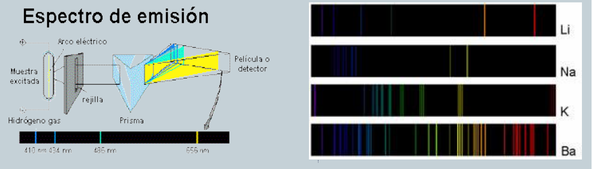
Los espectros de absorción para un elemento determinado son como los de emisión, pero aparecen rayas negras en un fondo coloreado con el espectro continuo.
Para obtenerlos, en vez de calentar la muestra, se hace pasar a través de ella un haz de luz blanca.
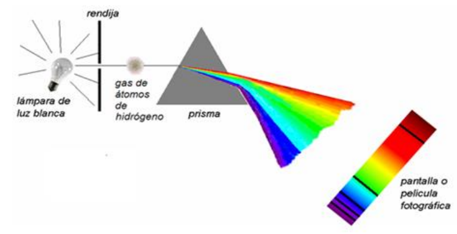
La espectrofotometría es una técnica básica de identificación de sustancias, ya que cada elemento químico emite siempre las mismas rayas de frecuencias características que sirven para identificarlo.
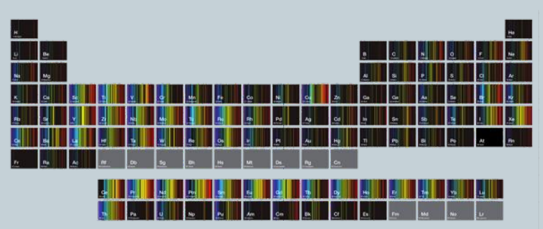
El espectro del hidrógeno fue el primero que se interpretó, por ser el más sencillo.
Se comprobó que la colocación de sus líneas espectrales obedecían a la ecuación empírica, propuesta en 1900 por J. Rydberg, donde m y n son números enteros y \(R = 1,097 \cdot 10^{7} \; m^{-1}\)
\(\dfrac {1}{\lambda} = R \cdot \left( \dfrac {1}{m^2} + \dfrac {1}{n^2} \right)\)
3. El átomo de Bohr.
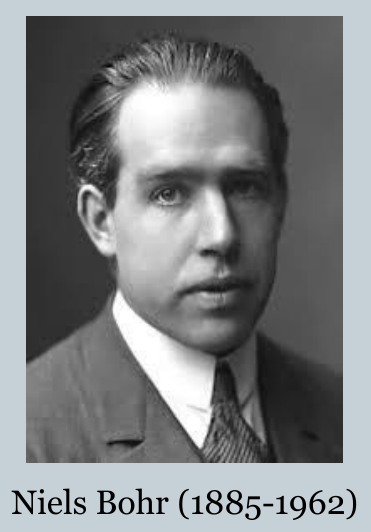
Con el fin de resolver los problemas acumulados sobre el modelo de átomo planetario, y para explicar el espectro del átomo de hidrógeno, Niels Bohr propone en 1913 un nuevo modelo atómico sustentado en tres postulados:
1. Postulado. Cualquiera que sea la órbita descrita por un electrón, éste no emite energía.
Las órbitas son consideradas como estados estacionarios de energía.
A cada una de ellas le corresponde una energía, tanto mayor, cuanto más alejada se encuentre del núcleo.
2. Postulado. No todas las órbitas son posibles.
Únicamente pueden existir aquellas órbitas para las cuales el momento angular del electrón sea un múltiplo entero de \(\dfrac {h}{2 \pi}\).
El momento angular (L) de una partícula incluye las magnitudes que caracterizan a una partícula que gira: su masa, su velocidad y la distancia al centro de giro.
Para una partícula de masa m que gire con velocidad v describiendo una circunferencia de radio r, el momento angular viene dado por: \(L = m \cdot v \cdot r\)
Por ello el segundo postulado puede expresarse así:
\(m \cdot r \cdot v = n \cdot \dfrac {h}{2 \pi}\)
El número n que determina las órbitas posibles, se denomina número cuántico principal. Las órbitas que se correspondan con valores no enteros del número cuántico principal, no existen.
3. Postulado. La energía liberada al caer un electrón desde una órbita superior, de energía \(E_2\), a otra inferior, de energía \(E_1\), se emite en forma de un cuanto de luz (fotón).
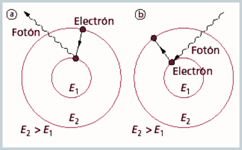
La frecuencia (\(f\)) del cuanto viene dada por la expresión:
\(\boldsymbol{E_2 - E_1 = h \cdot f }\)
donde \(h \; (\text{constante de Planck}) = 6,62 \cdot 10^{-34} \; \text{J·s}\)
Los cálculos basados en los postulados de Bohr daban excelentes resultados a la hora de interpretar el espectro del átomo de hidrógeno, pero hay que tener en cuenta que contradecían algunas de las leyes más asentadas de la Física:
El primer postulado iba en contra de la teoría electromagnética de Maxwell, ya que según esta teoría cualquier carga eléctrica acelerada debería de emitir energía en forma de radiación electromagnética.
El segundo postulado era aún más sorprendente. En la física clásica era inaceptable suponer que el electrón no pudiera orbitar a determinadas distancias del núcleo, o que no pudiera tener determinados valores de energía. La afirmación era equivalente a suponer que un objeto que describe circunferencias atado a una cuerda, no puede describir aquellas cuyo radio no sea múltiplo de dos (por ejemplo).
El tercer postulado afirmaba que la luz se emitía en forma de pequeños paquetes o cuantos, lo cual a pesar de que ya había sido propuesto por Planck en 1900, no dejaba de sorprender en una época en la que la idea de que la luz era una onda estaba firmemente arraigada.
El átomo de Bohr era, simplemente, un síntoma de que la física clásica, que tanto éxito había tenido en la explicación del mundo macroscópico, no servía para describir el mundo de lo muy pequeño, el dominio de los átomos.
RADIO DE LAS ÓRBITAS PERMITIDAS
Aplicando la física clásica, el electrón se mantiene en órbita porque la fuerza eléctrica de atracción del protón que actúa sobre él es la fuerza centrípeta que lo mantiene en órbita. La fuerza eléctrica viene dada por la ley de Coulomb, en la que a la carga del electrón y la del protón las llamamos e. Y en la expresión de la fuerza centrípeta m es la masa del electrón, v su velocidad y en ambas fórmulas r es el radio de la órbita del electrón (distancia protón-electrón)
\({F = K \cdot \dfrac {q_1 \cdot q_2}{r^2} \hspace{1cm} \rightarrow \hspace{1cm} F = K \cdot \dfrac {e^2}{r^2} \hspace{3cm} F = m \cdot a_c = m \cdot \dfrac {v^2}{r}}\)
Igualando ambas fuerzas: \({\hspace{2cm} K \cdot \dfrac {e^2}{r^2} = m \cdot \dfrac {v^2}{r}}\)
Y despejando r:
\({\hspace{2cm} r = \dfrac {k \cdot e^2}{m \cdot v^2} \hspace{1cm} }\) (Ecuación 1)
Según el segundo postulado de Bohr se debe cumplir que: \(\hspace{0.5cm} m \cdot v \cdot r = n \cdot \dfrac {h}{2 \cdot \pi}\)
de donde: \({\hspace{0.5cm} v = \dfrac {n \cdot h}{2 \pi \cdot m \cdot r} \hspace{1cm} \rightarrow \hspace{1cm} v^2 = \dfrac {n^2 \cdot h^2}{4 \pi^2 \cdot m^2 \cdot r^2} }\)
Sustituyendo este valor de \(v^2\) en la ecuación 1 y operando:
\({\hspace{2cm} r = n^2 \cdot \dfrac {h^2}{4 \pi^2 \cdot m \cdot k \cdot e^2} \hspace{1cm} }\)
Todo lo de dentro del paréntesis son constantes conocidas, y operando queda: \({\hspace{1cm} r = n^2 \cdot 5,3 \cdot 10^{-11} }\)
\(\boldsymbol{r = n^2 \cdot a }\)
Es decir, la primera órbita del átomo de hidrógeno tendrá un radio de \(r_1 = 5,3 \cdot 10^{-11} \; m\)
La segunda órbita tendrá un radio de \(4 \cdot r_1\)
La tercera órbita un radio de \(9 \cdot r_1\), etc.
Dado que n es siempre un número entero vemos que las órbitas no pueden tomar cualquier valor , es decir el valor del radio está “cuantizado”.
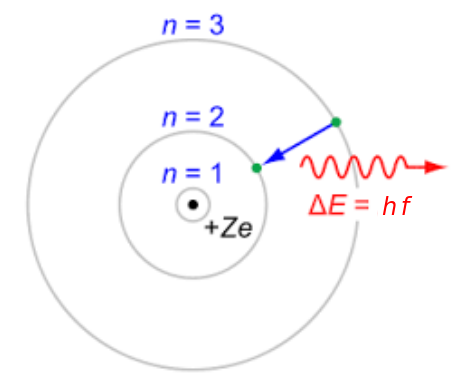
ENERGÍA DEL ELECTRÓN EN LAS ÓRBITAS
La energía total del electrón será la suma de su energía cinética y potencial (eléctrica):
Anteriormente antes se pudo deducir que: \({\hspace{0.5cm} m \cdot v^2 = \dfrac {k \cdot e^2}{r} }\)
Por lo tanto:
Y sustituyendo el valor de r hallado anteriormente:
Si sustituimos los valores de las constantes, operamos, y expresamos la energía en eV, nos queda:
\(\boldsymbol{E = - \dfrac {A}{n^2} }\)
El electronvoltio (eV) es una unidad de energía que representa la variación de energía cinética que experimenta un electrón al moverse desde un punto de potencial \(V_a\) hasta un punto de potencial \(V_b\) entre los que hay una diferencia de potencial de 1 V.
Equivale a \(1,60 \cdot 10^{-19}\) J, obteniéndose este valor de multiplicar la carga del electrón (\(1,60 \cdot 10^{-19}\) C) por la unidad de potencial eléctrico (V).
En física de partículas se usa indistintamente como unidad de masa y de energía, ya que en relatividad ambas magnitudes se refieren a lo mismo.
Según el tercer postulado de Bohr, el electrón solo emite o absorbe energía en los saltos de una órbita permitida a otra. En dicho cambio emite o absorbe un fotón cuya energía es la diferencia de energía entre ambos niveles.
Este fotón, según la ecuación de Planck tiene una energía: \(E_2 - E_1 = h \cdot f\) donde 1 identifica la órbita inicial y 2 la final, y f es la frecuencia.
Entonces las frecuencias de los fotones emitidos o absorbidos en la transición serán:
A veces, en vez de la frecuencia se suele dar la inversa de la longitud de onda:
Esta última expresión fue muy bien recibida porque explicaba teóricamente la fórmula empírica hallada antes por Balmer (generalizada posteriormente por J. Rydberg) para describir las líneas espectrales observadas desde finales del siglo XIX en la desexcitación del hidrógeno.
4. Modificaciones al átomo de Bohr.
Sommerfeld (en 1916) perfeccionó el átomo de Bohr considerando que si el electrón está sometido a una fuerza inversamente proporcional al cuadrado de la distancia (ley de Coulomb), debería de describir una elipse, no una circunferencia.
Según la teoría desarrollada por Bohr un electrón no puede poseer valores arbitrarios de energía cuando orbita alrededor del núcleo, hay valores permitidos y valores prohibidos, ya que existen órbitas permitidas y otras que están prohibidas. La energía está "cuantizada".
Para fijar una elipse necesitamos determinar dos parámetros: el valor del semieje mayor y el del semieje menor.
Los parámetros más importantes de la elipse son:
-
El semieje mayor, a.
-
El semieje menor, b.
-
La distancia focal, c.
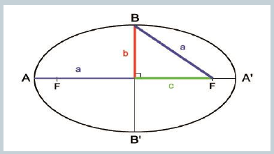
Por tanto, para determinar las posibles órbitas elípticas necesitamos dos números cuánticos:
n: Número cuántico principal. Cuantiza (fija) el semieje mayor.
\(\boldsymbol{\ell}\): Número cuántico secundario. Cuantiza (fija) el semieje menor. Con el mismo valor del radio (semieje mayor de la elipse), existen muchas elipses que se diferencian en su excentricidad (distinto valor del semieje menor).
El número cuántico principal, n, fija el valor del semieje mayor.
El número cuántico secundario, \(\boldsymbol{\ell}\), fija el valor del semieje menor.
El número cuántico secundario solamente puede tomar los valores enteros comprendidos entre 0 y n - 1:
Ejemplos:
Si n = 1, solo puede existir \(\ell = 0\)
Si n = 2, pueden existir valores de \(\ell = 0, 1\)
Si consideramos un espacio tridimensional, vemos que las elipses (órbitas electrónicas) pueden adquirir diversas orientaciones.
Otro número cuántico, \(\boldsymbol{m_\ell}\), número cuántico magnético, fija (cuantiza) las orientaciones permitidas.
El número cuántico magnético adquiere valores enteros comprendidos entre - \(\boldsymbol{\ell}\) y + \(\boldsymbol{\ell}\) (incluyendo el valor cero).
LOS NÚMEROS CUÁNTICOS
Las órbitas posibles, en consecuencia, quedan fijadas por tres números cuánticos:
n: Número cuántico principal. Cuantiza (fija) el semieje mayor de la órbita (elipse).
Valores: n = 1, 2, 3 ...
\(\boldsymbol{\ell}\): Número cuántico secundario. Cuantiza (fija) el radio menor de la órbita (elipse).
Valores: \(\ell\) = 0, 1, 2, 3 ... (n - 1)
\(\boldsymbol{m_\ell}\): Número cuántico magnético. Cuantiza (fija) la orientación de la órbita en el espacio.
Valores: \(m_\boldsymbol{\ell} = - \boldsymbol{\ell} . . . 0 . . . + \boldsymbol{\ell}\)
A cada órbita, determinada por los tres números cuánticos, le corresponde un valor de energía.
Si ahora consideramos al electrón como una partícula situada en determinada órbita, a la energía de la órbita hemos de sumar una energía propia del electrón (podemos imaginar el electrón como una partícula que gira sobre su propio eje).
Esta energía está también cuantizada (es decir, no puede tomar cualquier valor) y es función de un cuarto número cuántico, \(\boldsymbol{m_s}\), llamado "número cuántico de spin".
En resumen, la energía de un electrón situado en una órbita es función de cuatro números cuánticos: tres que fijan el valor de la energía de la órbita considerada: n, \(\boldsymbol{\ell}\) y \(\boldsymbol{m_\ell}\), y el número cuántico de spin, \(\boldsymbol{m_s}\), que cuantiza la energía propia del electrón:
5. Configuraciones electrónicas.
Una vez que conocemos los distintos niveles de energía en los que pueden situarse los electrones el siguiente paso será calcular su energía y ordenarlos según un orden creciente.
Cuando se trata de hacer eso se comprueba que en condiciones normales (ausencia de campos magnéticos) los valores de energía dependen únicamente de los valores de los números cuánticos n y \(\ell\), es decir, aquellos estados de energía que difieren en el valor de \(m_{\ell}\) tienen la misma energía (se dice que son degenerados).
Por razones históricas los niveles con:
-
\(\ell\) = 0 se nombran como "s"
-
\(\ell\) = 1 se nombran como "p"
-
\(\ell\) = 2 se nombran como "d"
-
\(\ell\) = 3 se nombran como "f"
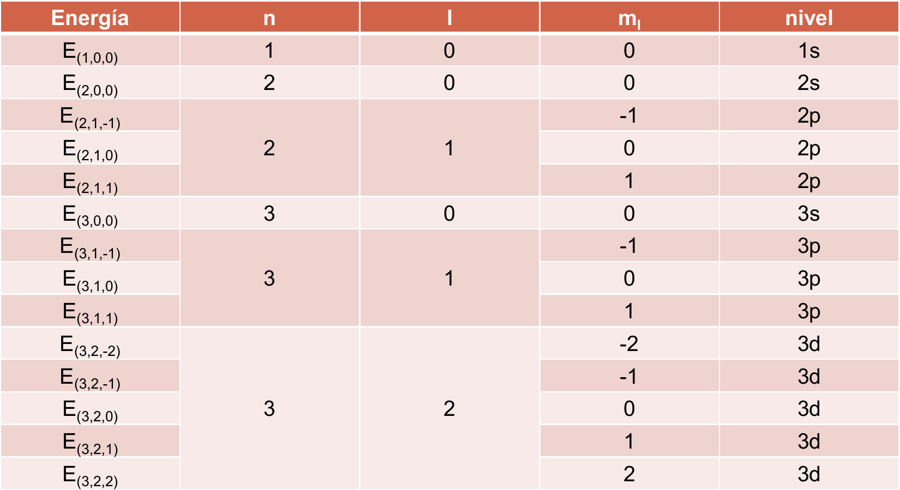
DIAGRAMA DE MÖLLER
Para recordar el orden de energía (de menor a mayor) se recurre al llamado diagrama de Möller.
Se puede observar que a partir de la tercera capa estados con un valor de n superior (por ejemplo el 4s) pueden tener menos energía que otros con un valor de n inferior (por ejemplo el 3d).
En general, cuanto mayor es n + \(\boldsymbol{\ell}\), mayor es la energía.
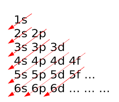
PRINCIPIO DE EXCLUSIÓN DE PAULI
A la hora de ir llenando con electrones los distintos estados de energía disponibles hay que tener en cuenta el llamado principio de exclusión de Pauli:
No pueden existir dos electrones con los cuatro números cuánticos iguales.
Podemos determinar el número máximo de electrones que pueden situarse en un nivel energético dado aplicando el principio de exclusión de Pauli.
Puede haber como máximo:
-
dos electrones en un estado “s”
-
seis en un estado “p”
-
diez en un estado “d”
-
catorce en un estado “f”
Podemos por tanto obtener la configuración electrónica de un átomo siguiendo las siguientes normas:
-
Considerar el número de electrones que se deben distribuir. Recordar que el número de electrones en un átomo neutro viene dado por el número atómico Z.
-
Los electrones se van distribuyendo entre los estados de energía posibles llenando primero los de menor energía. Cuando un nivel se complete, pasar al siguiente (recordar el principio de exclusión y para establecer el orden de llenado usar el diagrama de Möeller).
-
La configuración final debe darse ordenada por capas.
-
Si queremos afinar un poco más en la configuración electrónica deberemos usar el Principio de Máxima Multiplicidad o Regla de Hund que establece que a la hora de ocupar estados de energía degenerados (por ejemplo los tres estados"p") los electrones tienden a situarse en ellos con idéntico spin.
Se puede observar que en el C, N y O, los electrones de los estados “p” tienen sus espines iguales (“paralelos”)
| Átomo | Z | Configuración electrónica | Diagrama de orbitales |
|---|---|---|---|
| Li | 3 | 1s² 2s¹ | ↑↓ ↑ |
| Be | 4 | 1s² 2s² | ↑↓ ↑↓ |
| B | 5 | 1s² 2s² 2p¹ | ↑↓ ↑↓ ↑ |
| C | 6 | 1s² 2s² 2p² | ↑↓ ↑↓ ↑↑ |
| N | 7 | 1s² 2s² 2p³ | ↑↓ ↑↓ ↑↑↑ |
| O | 8 | 1s² 2s² 2p⁴ | ↑↓ ↑↓ ↑↓↑↑ |
| F | 9 | 1s² 2s² 2p⁵ | ↑↓ ↑↓ ↑↓↑↓↑ |
| Ne | 10 | 1s² 2s² 2p⁶ | ↑↓ ↑↓ ↑↓↑↓↑↓ |
Sabemos que la configuración \(n s^2 p^6\) (configuración de gas noble) en la última capa es especialmente estable.
Aunque la estabilidad es considerablemente menor que la correspondiente a la estructura de gas noble, también presentan una estabilidad considerable las estructuras que se corresponden con los niveles p o d llenos o semillenos.
Para alcanzarlas algunos elementos pueden promocionar electrones desde niveles de energía inferior a niveles superiores. Este efecto se observa, sobre todo, entre los metales de transición, en los cuales los niveles (n - 1) d y n s están muy próximos energéticamente.
Ejemplos:
Este efecto es muy importante en la química del carbono, el cual, a pesar de tener como estructura teórica \(\ce{1s^2 2s^2 2p^2}\), presenta la configuración \(\ce{1s^2 2s^1 2p^3}\) en la mayoría de sus combinaciones.
La energía empleada en promocionar un electrón de un nivel 2s al 2p se compensa con creces al formar cuatro enlaces covalentes en vez de dos.
6. Modelo ondulatorio. Orbitales atómicos. De Broglie, Heisenberg.
Los trabajos que desarrollaron en las dos primeras décadas del siglo XX una serie de científicos como Werner Heisenberg, Erwin Schrödinger, Max Born, Paul Dirac, Louis De Broglie, Albert Einstein, etc., cambiaron radicalmente la concepción del átomo.
Una vez establecida que la energía está cuantizada, y tras la satisfactoria explicación de los espectros atómicos por Bohr, la imagen del átomo como un pequeño sistema solar se vino abajo.
Veremos a continuación los aspectos más relevantes de este cambio.
HIPÓTESIS DE DE BROGLIE
Tradicionalmente, los electrones se habían considerado como partículas, y por tanto un haz de electrones sería algo claramente distinto de una onda.
Louis de Broglie propuso (1923) eliminar esta distinción: un haz de partículas y una onda son esencialmente el mismo fenómeno; simplemente, dependiendo del experimento que realicemos, observaremos un haz de partículas u observaremos una onda. Así, el electrón posee una longitud de onda (que es un parámetro totalmente característico de las ondas).
Esta idea, que en un principio era una simple propuesta teórica, fue confirmada experimentalmente en 1927, cuando se consiguió que haces de electrones experimentasen un fenómeno muy característico de las ondas: la distorsión de la onda al atravesar una rendija muy estrecha (difracción).
La energía correspondiente a un fotón viene dada por la ecuación: \(\ce{E = h · f = h · \dfrac {c}{\lambda} }\), y teniendo en cuenta la ecuación de Einstein: \(\ce{E = m · c^2}\), al fotón, considerado como partícula, le correspondería un momento lineal que va a estar relacionado con su longitud de onda y se puede deducir de las expresiones anteriores: \(\ce{\hspace{0.5cm} h · \dfrac {c}{\lambda} = m · c^2 \; \rightarrow \; \lambda \; = \dfrac {h}{m · c}}\)
De Broglie, asignó a las partículas una onda asociada cuya longitud de onda viene dada por la siguiente expresión:
\(\ce{\lambda \; = \dfrac {h}{m \cdot v} }\)
PRINCIPIO DE INCERTIDUMBRE DE HEISENBERG
Principio que revela una característica distinta de la mecánica cuántica que no existe en la mecánica newtoniana. Como una definición simple, podemos señalar que se trata de un concepto que describe que el acto mismo de observar cambia lo que se está observando.
En 1927, el físico alemán Werner Heisenberg se dio cuenta de que las reglas de la probabilidad que gobiernan las partículas subatómicas nacen de la paradoja de que dos propiedades relacionadas de una partícula no pueden ser medidas exactamente al mismo tiempo.
Por ejemplo, un observador puede determinar o bien la posición exacta de una partícula en el espacio o su momento (el producto de la velocidad por la masa) exacto, pero nunca ambas cosas simultáneamente. Cualquier intento de medir ambos resultados conlleva a imprecisiones.
Según el principio de incertidumbre, el producto de esas incertidumbres en los cálculos no puede reducirse a cero. La precisión máxima está limitada por la siguiente expresión:
\(\ce{\Delta x \cdot \Delta p \geq \dfrac {h}{2 \pi} }\)
DESCRIPCIÓN ONDULATORIA DEL ELECTRÓN
Uno de los métodos para describir matemáticamente el comportamiento de los electrones ha sido mediante una “ecuación de ondas”, similar a las de las ondas estacionarias. Fue desarrollado por E. Schrödinger en 1926.
Las soluciones de dicha ecuación son “funciones de onda” representadas por la letra \(\Psi\).
Las funciones de onda están condicionadas por unos números cuánticos que adquieren exactamente los mismos valores que ya conocemos y que se introdujeron para explicar los espectros atómicos con el modelo de Bohr-Sommerfeld.
ORBITALES ATÓMICOS
Aunque la función de onda \(\Psi\) no tiene un significado físico real, su cuadrado (\(\Psi^2\)) es una medida directa de la probabilidad de encontrar al electrón en una determinada zona del espacio.
El valor de \(\Psi^2\) en un punto es proporcional a la densidad de carga en dicho punto. En el intervalo de distancias al núcleo en el que \(\Psi^2\) alcanza un valor por encima del 90 % podemos encontrar con bastante seguridad al electrón, por lo que podemos representarlo mediante un contorno volumétrico al que llamamos orbital atómico. Así pues:
Orbital atómico es una zona del espacio donde existe una gran probabilidad de encontrar al electrón. Esta probabilidad se cifra arbitrariamente en al menos un 90 %.
En consecuencia, abandonamos definitivamente la idea de órbitas definidas para hablar de probabilidades, como ya nos sugería el principio de indeterminación. Por ello nos imaginaremos al electrón como una nube difusa de carga distribuida alrededor del núcleo, de manera que la densidad de carga será mayor en las zonas donde más probable sea que esté el electrón.
TIPOS DE ORBITALES
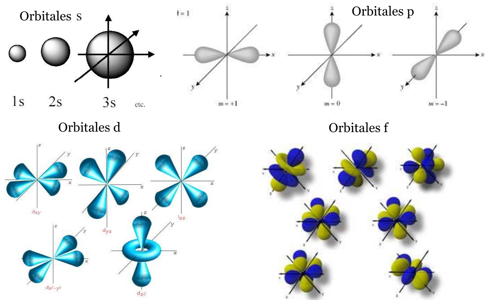
Los orbitales se relacionan con los subniveles de energía vistos anteriormente y están determinados por los números cuánticos permitidos. El valor que tome el número cuántico l nos da el tipo de orbitales.
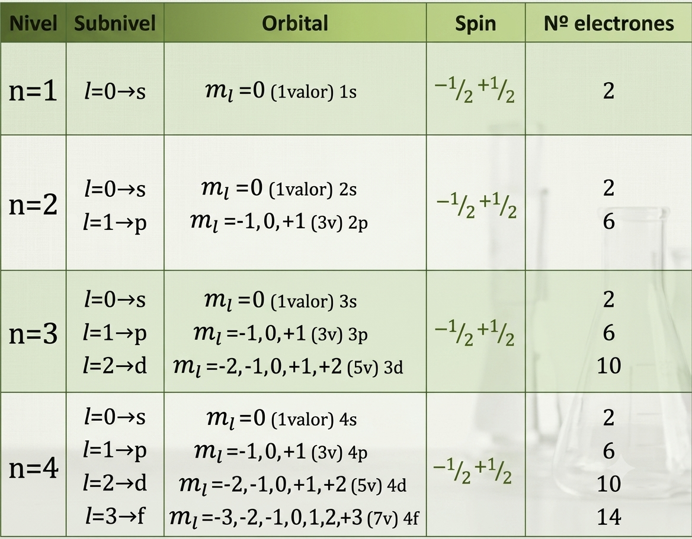
NÚMEROS CUÁNTICOS Y ORBITALES
A la vista del concepto de orbital podemos reinterpretar el significado de los números cuánticos:
Un orbital atómico está determinado por tres números cuánticos:
-
El número n nos informa sobre el tamaño y la energía del orbital.
-
El número \(\boldsymbol{\ell}\) nos informa sobre la forma y la energía del orbital (aunque en menor medida que n, recordemos que la energía de un orbital la sacamos de n + \(\ell\)).
-
El número m nos informa de la orientación espacial del orbital.
El número s (spin) es propio del electrón, no del orbital, y puesto que el principio de exclusión de Pauli impide que en un átomo haya dos electrones con los 4 números cuánticos iguales, en un mismo orbital (que ya tiene n, l y m iguales) solo caben dos electrones: uno con spin \(\ce{+ \dfrac {1}{2}}\) y otro con spin \(\ce{- \dfrac {1}{2}}\).
7. El Sistema Periódico.
ORDENACIÓN DE LOS ELEMENTOS
Según se iban descubriendo nuevos elementos a lo largo del siglo XIX, hubo numerosos intentos de clasificarlos y ordenarlos con algún criterio más o menos claro.
La actual clasificación que nos aporta la tabla periódica se basa en los trabajos de D. Mendeléiev y L. Meyer, que se basa en la variación periódica de algunas de las propiedades de los elementos en función de su masa atómica. En esa inicial tabla había once períodos y ocho grupos. Incluso llegaron a prever huecos en la misma anunciando que correspondían a elementos aún no descubiertos, cosa que fue cierta.
En 1912, H. Moseley, observó que las frecuencias características de absorción de los espectros de rayos x de los elementos conocidos seguían una ordenación secuencial que era función del número atómico (Z) de dichos elementos. Surge entonces la idea de ordenarlos según sus números atómicos y no según las masas atómicas.
A partir de esa idea surge el actual sistema periódico debido a A. Werner y F.A. Paneth, que consta de 18 columnas o grupos y 7 filas o periodos.
En cada grupo se colocan los elementos de propiedades análogas, y cada periodo se construye colocando elementos que aumentan en una unidad Z (número atómico) del elemento precedente. De esta manera se separan los metales de los no-metales y, sobre todo, las distribuciones electrónicas son coherentes con la estructura del sistema periódico.
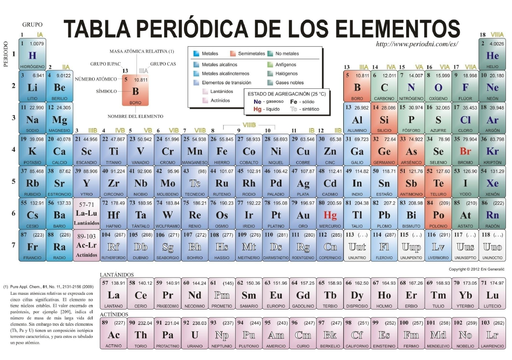
La tabla periódica guarda una estrecha relación con las configuraciones electrónicas. Si éstas terminan en orbitales s o p se trata de elementos de los grupos representativos, si terminan en d son elementos de transición, y si terminan en f son elementos de transición interna.
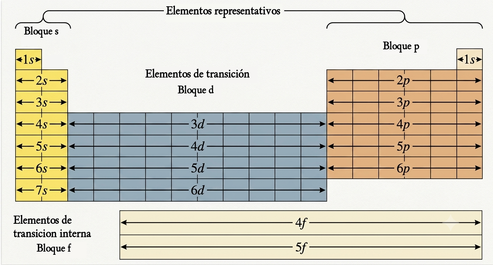
FAMILIAS DE ELEMENTOS
Elementos representativos:
-
Alcalinos, grupo 1, \(\ce{ns^1}\)
-
Alcalinotérreos, grupo 2, \(\ce{ns^2}\)
-
Térreos (boroideos), grupo 13, \(\ce{ns^2 np^1}\)
-
Carbonoideos, grupo 14, \(\ce{ns^2 np^2}\)
-
Nitrogenoideos, grupo 15, \(\ce{ns^2 np^3}\)
-
Anfígenos, grupo 16, \(\ce{ns^2 np^4}\)
-
Halógenos, grupo 17, \(\ce{ns^2 np^5}\)
-
Gases Nobles, grupo 18, \(\ce{ns^2 np^6}\)
El hidrógeno es un caso especial, ya que al tener configuración \(\ce{1s^1}\) se coloca arriba del grupo de los alcalinos, pero es un no-metal.
Elementos de transición:
- Grupos del 3 al 12, \(\ce{ns^2 (n - 1) d^x}\). Tienen dos electrones en la última capa, a veces solo uno. Se diferencian en la penúltima capa.
Elementos de transición interna:
Son las familias de “lantánidos” y “actínidos”. Aunque sus electrones de valencia son de la capa 6 o 7, se diferencian unos de otros por los electrones f de las capas 4 o 5, por lo que son muy parecidos entre sí.
PROPIEDADES PERIÓDICAS
Hay una serie de propiedades de los elementos cuyo valor varía de forma periódica, de manera que son bastante parecidas entre los elementos de un mismo grupo, pero varían mucho entre los de un mismo período.
De cada una de ellas hemos de saber: su definición, la forma en que varía en la tabla periódica, tanto en sentido vertical como horizontal, y hemos de saber dar una explicación a esas variaciones.
Las propiedades que vamos a estudiar son:
-
Energía de ionización.
-
Afinidad electrónica.
-
Electronegatividad.
-
Radios atómicos e iónicos.
ENERGÍA DE IONIZACIÓN
La enegía de ionización, EI, (o potencial de ionización) es la energía mínima necesaria para arrancar un electrón de un átomo gaseoso en su estado fundamental, transformándolo en un ión positivo.
Si comparamos los elementos de un mismo periodo, vemos que las energías de ionización aumentan a medida que nos desplazamos hacia la derecha, puesto que aumenta el valor de la carga nuclear. Si bajamos en un grupo la EI decrece, pues la atracción nuclear también decrece al aumentar la distancia al núcleo del último electrón. En las siguientes diapositivas se explica con más detalle.
Rigurosamente deberíamos de hablar de primera energía de ionización cuando se arranca el primer electrón, segunda energía de ionización cuando arrancamos el segundo (siempre mayor ya que hay que extraer una carga negativa de un átomo con carga positiva), tercera energía de ionización para el tercero... etc.
Como se observa en la tabla la tendencia es a crecer hacia la derecha. Se observan valores anormalmente altos para el Be y el N que se pueden explicar por la especial estabilidad de la configuración \(\ce{2s^2}\) (con el nivel s lleno) para el Be, y \(\ce{2s^2 2p^3}\) (con el nivel p semilleno) para el N. Observar la gran energía de ionización del Ne debido a la gran estabilidad de la estructura \(\ce{2s^2 2p^6}\).
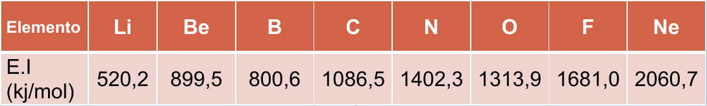
Si descendemos en un grupo la distancia al núcleo aumenta (a medida que descendemos aumenta el número de capas), mientras que la carga nuclear no aumenta significativamente (a pesar de que lo hace el número de protones) debido a que los electrones situados en órbitas inferiores “apantallan” en gran medida la carga del núcleo, haciendo que la carga nuclear efectiva sobre los electrones más externos (\(\ce{Z^∗ = Z - \sigma}\)) sea menor de la esperada.
La energía de ionización, por tanto, disminuye a medida que se desciende en un grupo al estar los electrones menos atraidos por el núcleo.
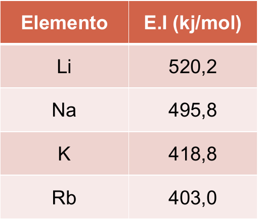
AFINIDAD ELECTRÓNICA
Se define la afinidad electrónica (AE) como la variación de energía (generalmente desprendida) que tiene lugar cuando un elemento, en estado gaseoso, capta un electrón:
Como generalmente se desprende energía el signo de la AE es negativo (el átomo libera energía). Si hay que suministrar energía el signo será positivo.
La variación de la afinidad electrónica en el sistema periódico será idéntica a la mostrada al hablar de la energía de ionización:
-
Si un elemento tiende a captar electrones (afinidad electrónica alta) no tenderá a cederlos, debiendo de comunicar una gran energía para lograrlo (energía de ionización alta).
-
Si un elemento tiende a ceder electrones habrá que comunicarle poca energía (energía de ionización baja) y no tenderá a captarlos (afinidad electrónica baja).
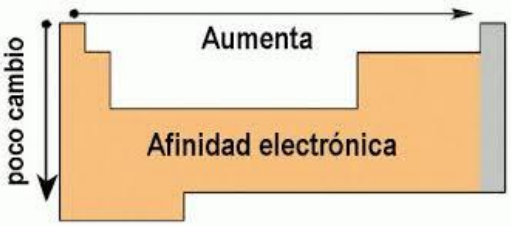
ELECTRONEGATIVIDAD
Es la tendencia que tiene un elemento para atraer hacia sí el par electrónico del enlace compartido con otro. En ese sentido es una propiedad de los átomos enlazados entre sí.
Podríamos dar una definición operativa de la electronegatividad como suma conceptual (no algebraica) de la energía de ionización y la afinidad electrónica. Por "suma conceptual" se quiere dar a atender lo siguiente:
-
Energía de ionización alta y afinidad electrónica alta = Electronegatividad alta.
-
Energía de ionización baja y afinidad electrónica baja = Electronegatividad baja.
Por tanto:
Electronegatividades altas indican gran apetencia por los electrones. Los no metales son muy electronegativos.
Una electronegatividad baja indica tendencia a perder electrones. Los metales tienen electronegatividades bajas.
Como la energía de ionización y afinidad electrónica varían en el mismo sentido podemos afirmar que:
En un periodo la electronegatividad aumenta hacia la derecha.
En un grupo los elementos más electronegativos son los situados más arriba, y la electronegatividad disminuye a medida que se desciende.
En conjunto, por tanto, la electronegatividad aumenta hacia arriba y hacia la derecha.
Los elementos más electronegativos son los situados en el ángulo superior derecho de la tabla.
La electronegatividad no es medible experimentalmente (como la energía de ionización o la afinidad) sino que hay que calcularla indirectamente (mediante cálculos) a partir de otras propiedades atómicas o moleculares.
La escala de electronegatividad más usada es la propuesta por Pauling, en ella el elemento más electronegativo es el flúor.
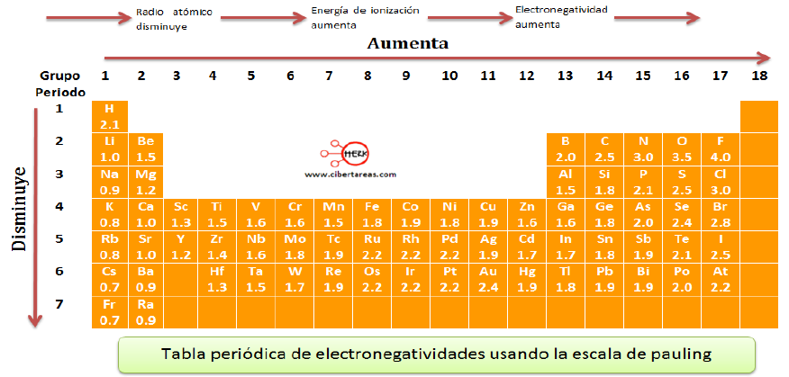
TAMAÑO DE LOS ÁTOMOS (RADIO ATÓMICO)
El tamaño de un átomo viene condicionado por tres factores:
-
El número de capas que posea. Los átomos que tengan más capas tendrán, lógicamente, un tamaño superior a aquellos otros que posean pocas capas.
-
El número de electrones situado en la última capa o capa de valencia. La existencia de muchos electrones en la última capa hace que aumente el tamaño del átomo, ya que los electrones, al ser cargas negativas, se repelen y tienden a separarse unos de otros.
-
La carga efectiva (Z*) del núcleo. Un electrón situado a determinada distancia del núcleo estará más fuertemente atraído por éste (tendiendo a situarse a menor distancia) si la carga nuclear efectiva es grande.
Si nos situamos en un grupo, los átomos tendrán mayor número de capas a medida que descendemos.
Los elementos más pequeños estarán situados en la parte superior y los más voluminosos en la parte de abajo del sistema periódico.
En un periodo todos los elementos tienen igual número de capas (aunque los elementos de transición colocan los electrones en el nivel “d” de la penúltima capa, éste se encuentra muy cerca de la última).
En los periodos cortos, y a medida que vamos hacia la derecha, la carga nuclear efectiva aumenta, ya que el efecto pantalla de los electrones situados en un mismo nivel es muy pequeño con lo que se produce una disminución del tamaño de los átomos, ya que el efecto de repulsión entre los electrones no es grande debido a que no existe una gran acumulación en la capa.
En los periodos largos, y hasta la mitad del mismo, la tendencia es a disminuir el tamaño de los átomos debido al aumento de carga nuclear efectiva. A partir de la mitad, y debido a la gran concentración de electrones, el efecto de repulsión se hace más importante, los electrones tienden a alejarse y el tamaño crece.
En resumen, en los periodos largos, el tamaño decrece desde la izquierda hacia el centro y aumenta desde éste a la derecha.
Los átomos más pequeños se encuentran situados hacia la mitad periodo.

TAMAÑO DE LOS IONES (RADIO IÓNICO)
Debemos diferenciar entre aniones y cationes.
- Los iones con carga negativa (aniones) son bastante más grandes comparados con los átomos neutros.
La razón está clara, a igualdad de carga efectiva del núcleo, al situar una carga negativa más en la capa aumentarán las repulsiones entre los electrones, provocando un aumento del radio del anión.
- Los iones con carga positiva (cationes) serán, sin embargo, bastante más pequeños que los átomos neutros.
La pérdida de una carga negativa implica que las repulsiones entre los electrones restantes se relajan y el radio del ión disminuye respecto del átomo neutro.
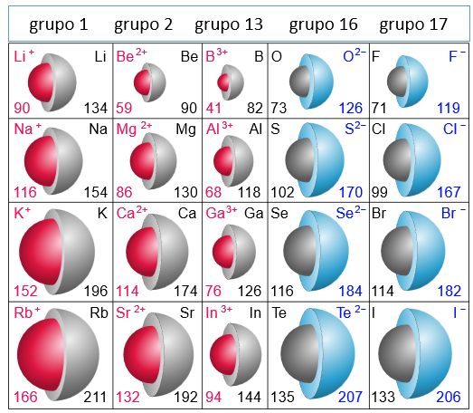
RESUMEN PROPIEDADES PERIÓDICAS
Los gases nobles tienen una estructura electrónica especialmente estable que se corresponde con ocho electrones en su última capa: \(\ce{ns^2 np^6}\) (excepto el He que tiene dos).
Todos los elementos tiende a adquirir la estructura de gas noble. Para eso tratan de captar o perder electrones.
Los elementos, como los halógenos o anfígenos, a los que les faltan solamente uno o dos electrones para adquirir la configuración de gas noble, tienen mucha tendencia a captar electrones transformándose en iones con carga negativa. Se dice que son muy electronegativos.
En general los no metales son elementos electronegativos y tienden a captar electrones para dar iones negativos (aniones).
Los elementos, como los alcalinos o alcalinotérreos, que están muy alejados de la configuración del gas noble siguiente, les resulta mucho más sencillo perder uno o dos electrones y adquirir la configuración electrónica del gas noble anterior. Por tanto, mostrarán mucha tendencia a formar iones con carga positiva. Se dice que son muy poco electronegativos.
En general los metales son poco electronegativos y tienden a perder electrones para dar iones positivos (cationes).
Los metales tienen energías de ionización bajas (cuesta muy poco arrancarles un electrón), la razón es bastante sencilla: si tienden a ceder electrones bastará con comunicarles muy poca energía para que los cedan.
Los no metales, sin embargo, muestran energías de ionización elevadas: si lo que quieren es captar electrones mostrarán muy poca tendencia a cederlos. Por tanto, habrá que comunicarles mucha energía para arrancárselos.
8. Partículas subatómicas y evolución del universo.
Más allá de los protones, neutrones y electrones descritos, a lo largo del siglo XX se fueron descubriendo una gran cantidad de nuevas partículas gracias a nuevos y potentes aparatos, entre los que destacan los aceleradores de partículas. En ellos, las partículas se aceleran a velocidades altísimas y se hacen chocar unas con otras.
Como resultado de esos choques se producen nuevas partículas, la mayoría de ellas de vida muy efímera, muy inestables. En los años 60 se llegó a hablar del “zoo de partículas”, con alrededor de 200 partículas descritas.
A ello hay que sumar la existencia de “antimateria”, predicha por Paul Dirac en 1930, confirmada dos años después al encontrar positrones (la antipartícula del electrón) en los rayos cósmicos.
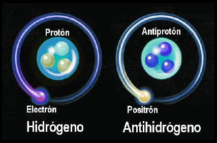
MODELO ESTÁNDAR
El Modelo Estándar (2012) pone orden en ese lío de partículas, y las organiza en una nueva “tabla periódica” de las partículas elementales.
Plantea dos tipos de partículas:
-
Fermiones (tres primeras columnas), con masa, y de las que existe para cada una su correspondiente antipartícula.
-
Bosones gauge (cuarta columna), responsables de las interacciones entre los fermiones.
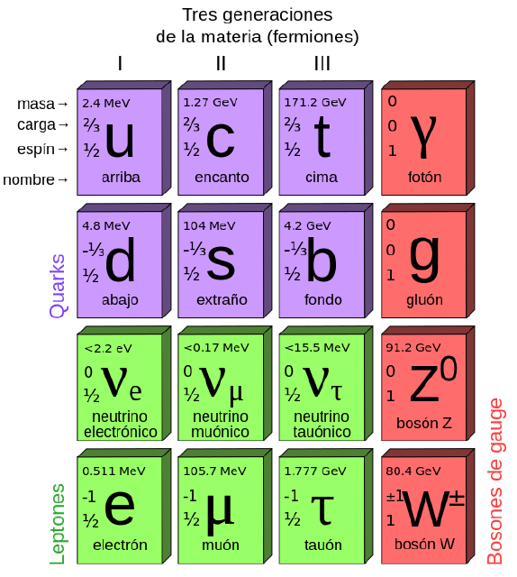
Los fermiones pueden ser quarks o leptones.
Hay seis tipos de quarks, y seis de leptones, agrupados en tres conjuntos o “generaciones”.
En realidad, las partículas que forman la materia conocida, los átomos, están formados por las de la primera generación: un protón está formado por dos quarks u y un quark d; y un neutrón está constituido por dos quarks d y uno u.
Las partículas de la segunda y tercera generación son inestables.
Los bosones de gauge son los responsables de las interacciones fundamentales entre los fermiones.
Son cuatro las interacciones fundamentales:
-
Gravitatoria: responsable de la fuerza peso, es la que actúa en el universo a gran escala.
-
Electromagnética: Es la fuerza que mantiene la estructura atómica (interacción electrón-núcleo). Su partícula portadora es el fotón.
-
Nuclear fuerte: actúa entre partículas con cargas de color, los quarks. Mantiene el núcleo unido (Gluón).
-
Nuclear débil: responsable de que las partículas de las generaciones segunda y tercera decaigan en las de la primera (Bosón).
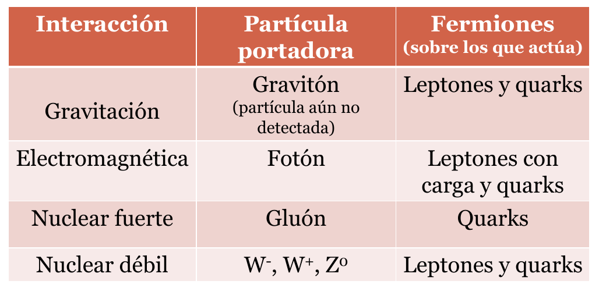
EVOLUCIÓN DEL UNIVERSO
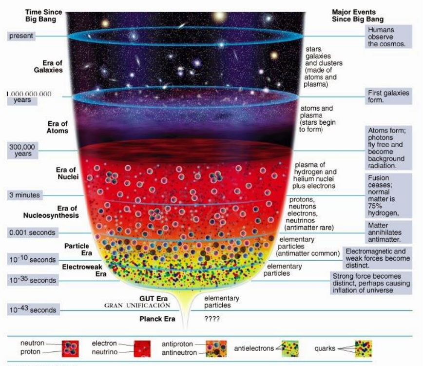
En la imagen anterior se visualiza la estrecha relación que existe en cosmología entre la física de partículas y la teoría del Big Bang.
En ella se establece que el universo actual se originó hace aproximadamente unos 13.800 millones de años.
En ese instante inicial todo el universo tenía un diámetro de \(\ce{10^{-33}}\) cm y una temperatura de \(\ce{10^{32}}\) K. Entre los segundos \(\ce{10^{-43}}\) y \(\ce{10^{-10}}\) el universo es un plasma de partículas y antipartículas. La temperatura es tan alta (> \(\ce{10^{13}}\) K) que los quarks no están ligados entre sí.
Entre los \(\ce{10^{-6}}\) y \(\ce{10^{-3}}\) s el universo se enfría por debajo de \(\ce{10^{13}}\) K y se forman los hadrones (protones, neutrones).
A partir de ahí y hasta los 3 min la temperatura baja lo suficiente como para que se puedan formar núcleos atómicos por combinación de protones y neutrones. Esa época se conoce como nucleosíntesis.
300.000 años después del Big Bang el universo es lo suficientemente frío (< \(\ce{10^5}\) K) como para que los electrones queden retenidos por los núcleos, con lo que se empiezan a formar átomos (“recombinación”). La densidad de universo disminuye y los fotones quedan libres de la materia.
En los siguientes 100-200 millones de años, por atracción gravitatoria, se forman las galaxias y en las estrellas. En estas últimas, los átomos de hidrógeno y helio se fusionan para dar lugar a otros más pesados.
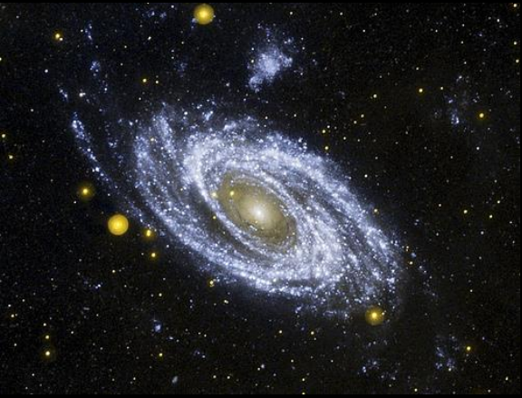